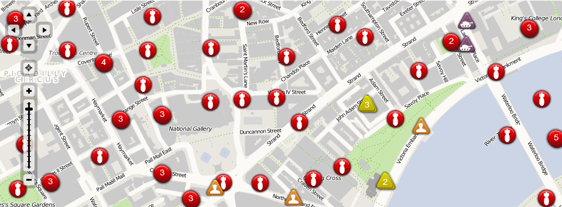
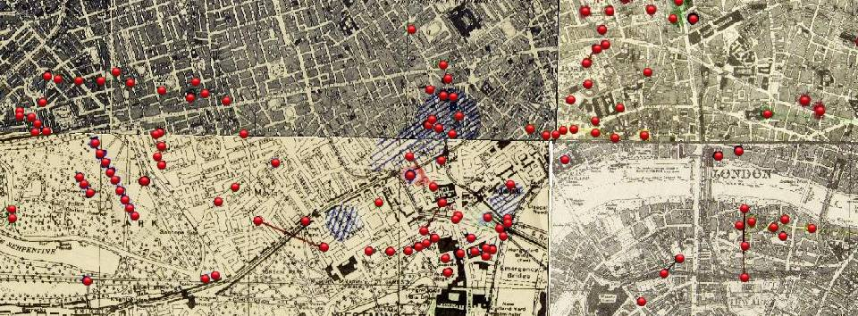
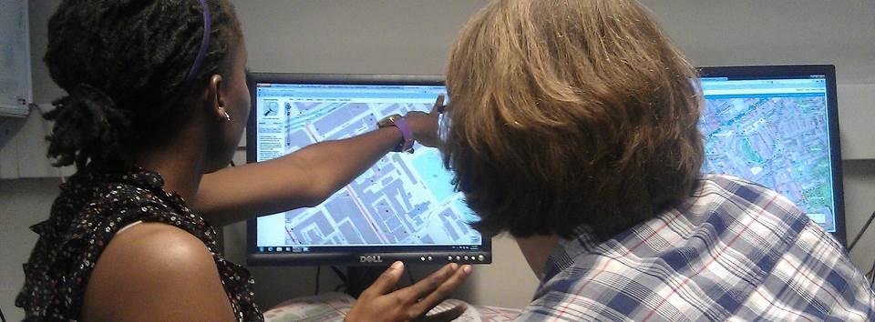
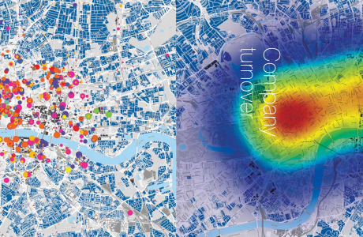

- 
Geo Web Application Development
We specialise in the development of complex web applications integrating a diverse range of location data and services. we always strive to create compelling, fast and usable user experiences.
- 
Our most recent project, Bomb Sight makes you discover London during WW2 Luftwaffe Blitz bombing raids, exploring maps, images and memories. The website went viral and was covered in international print, tv and web media.
- 
Training in GIS, Crowdsourcing and GeoWeb Development
We offer extensive experience in the design, development and delivery of training courses in all aspects of GIS, participative mapping and technical skills.
Experience
A combined 20 years of experience in consulting and training services across academia and many industry sectors, for local and central government, small and large entreprises.
GIS & Web
Our capabilities range from the design and delivery of simple web applications to large enterprise scale systems, prefering open-source solutions where appropriate.
People
We care about our customers and focus on our strenghts, tapping into our extensive network of partners to deliver true value to our clients.
Our work has been featured in:
Significant clients and projects, past and ongoing:
BombSight - Mapping the London Blitz
BombSight is an interactive website mapping the London WW2 Blitz. Users can explore where the bombs fell and discover contextual information including memories, photographs, statistics and defence locations. The main datasource for this project are digitised 1940s bomb census maps. SpatialBit developed both the web front end, as well as a a robust, scalable and entirely open-source infrastructure to store, manage and serve the many layers of geoinformation to both web and mobile clients. The site is based on the Python GeoDjango web-app framework, supplemented by Geoserver, with the generated data hosted in a PostGIS database. The website in December 2012 alone had more than half a million unique visitors, generating around 4 Terabytes of traffic, and got picked up by over 30 news websites (Daily Mail, BBC News, Wired, Der Spiegel, Le Monde ... ) as well as reported on BBC London News, BBC Breakfast, BBC Newsnight and ITV News.
We are working with the Luxembourg state mapping agency ACT, to support and further develop the Luxembourg state geoportal. The GeoPortail API is a service platform delivering both data and functionality, enabling the integration in external web pages of the Luxembourg geoportal functionality (like Google Maps API).
This consultancy project involves the provision to the state agency of specialist technical and development resources, as well as supporting and promoting the platform to state, local government and business users. In parallel, we are also consulting a cross government department working group defining a licensing & sharing framework for government geodata, working towards opening government geodata to wider usage.

Industry Cluster Analysis & Visualisation
We have extensive experience in the capture, analysis and visualisation of industry clusters. For UCL Advances, the business and entrepreneurship promotion arm of University College London, we developed a comprehensive database of innovative tech startups for 8 cities across the world. This database enabled the development of a comparison of activity patterns and the development of a TechCity Atlas, with innovative visualisations of entrepreneurship patterns. This cluster database was also used by other clients such as StartupIntelligence for their cluster reports.
OSMBuzz - OpenStreetMap Change Visualisation
OSMBuzz visualises random near real-time updates of the OpenStreetMap crowdsourced mapping database. This is an experiment in the analysis of and visualisation of dynamic and spatial big data sets.
Want to know more about what we can do for you?
Our core team is composed of geospatial experts with a combined experience of over 20 years in Research and Development. Through our extensive network of trusted Associates we can deliver a wide range of projects.
Dr Patrick Weber, EngD
Founder
Patrick is the founder of SpatialBit and principal consultant, and holds a Msc in GIS and Engineering Doctorate in Computer Science and GIS from UCL, London. During the last 10 years, he has worked in multiple roles as a GIS & Web project manager and developer, and academic researcher and lecturer. Along the way, he gained extensive experience in numerous industry sectors, such as business location intelligence, spatial analysis and decision-making, environmental and infrastructure GIS. He has a keen interest in Volunteered Geographical Information, particularly the OpenStreetMap project, and GI usability.